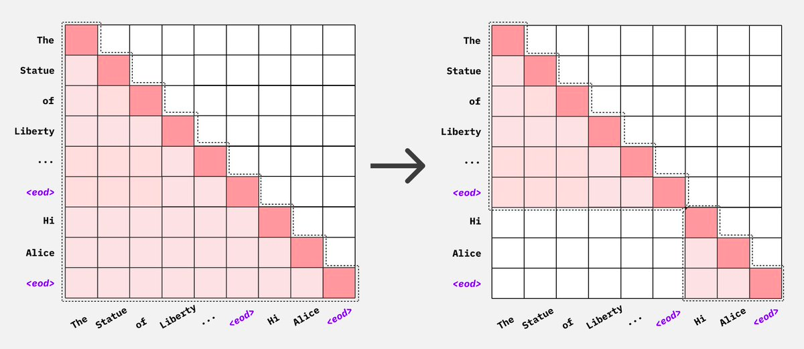
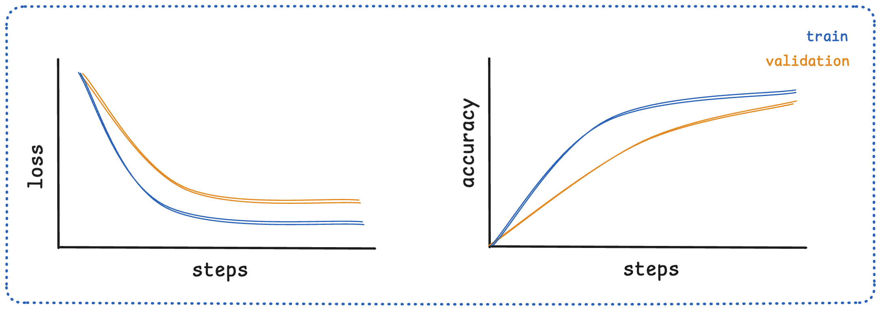
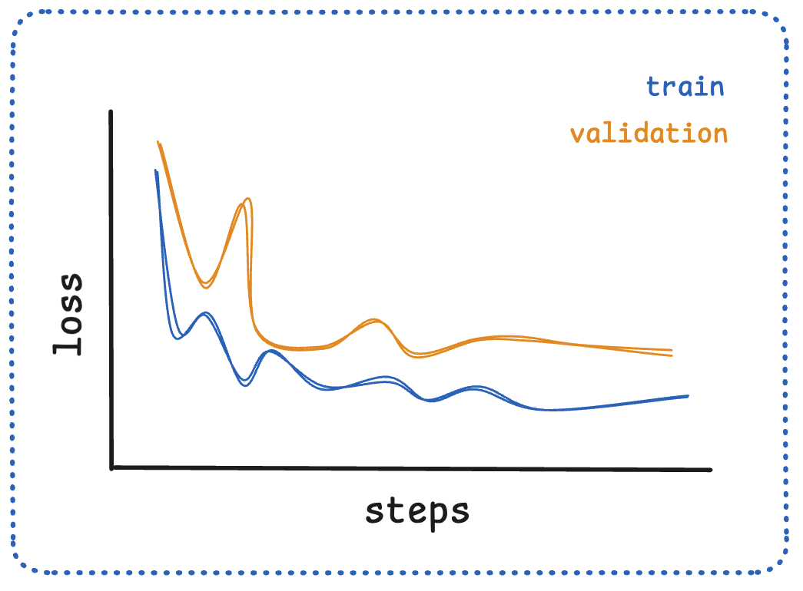

01-预训练 Pretrain
TL; DR：完整走一遍预训练 pipeline - 数据 / tokenize / chunk → 模型怎么对齐 label 算 loss → lr 调度 + 训练监控 → 训完的 base model 能做什么
模型结构和训练策略层面的内容分别见 Transformer 和“训练策略”（并行）系列。虽然面试点不多，但预训练流程是基石，知道全貌很必要。
前言
最近被 assign 去做了 SFT 框架迁移。想写SFT，但在进入 SFT 之前，感觉还是要先把预训练简单过一下。
这篇笔记的范围：
- 不展开模型结构：基于Transformer，但默认对以 LLaMA 为代表 Decoder 已经熟悉，想看细节可以去 01_01_Transformer.md
- 不展开并行 / 显存切分等训练策略：这些会在"训练策略"系列里单独写
只关心 LLM 训练自己的事，按数据流向走：
- 数据从哪来、prepared 后长什么样
- 数据如何处理成模型 input 并切分送入模型，output 是什么、ground truth 如何定义
- 如何衡量 output 和 GT 的距离、更新模型——也就是训练目标
- 训完之后的 base model 能做什么
整体顺序：原始数据 → Tensor → 模型 → Loss → 参数更新 → base model。
1. Pretrain 位置
LLM 训练经典的三阶段流程：
flowchart LR
P("⭐ <span style=color:#fff>Pretrain<br/><br/>海量无标注语料<br/>1T ~ 15T tokens<br/>自监督 (next token)<br/>lr ~ 1e-4<br/>训练几个月</span>")
S("SFT<br/><br/>(prompt, response)<br/>1M ~ 10M 条<br/>监督 (response 监督)<br/>lr ~ 1e-5<br/>训练几天 ~ 几周")
R("RLHF / DPO<br/><br/>(prompt, chosen, rejected)<br/>100K ~ 1M 条<br/>RL / 比较学习<br/>lr ~ 5e-7<br/>训练几天")
O("aligned model")
P -->| base model | S
S -->| instruct model | R
R --> O
style P fill:#3f51b5,stroke:#1a237e,stroke-width:2px,color:#fff
style S fill:#e8eaf6,stroke:#3f51b5,stroke-width:1.5px,color:#1a237e
style R fill:#e8eaf6,stroke:#3f51b5,stroke-width:1.5px,color:#1a237e
style O fill:#f5f5f5,stroke:#9e9e9e,stroke-width:1px,color:#424242Pretrain 训出来的就是所谓的 base model（GPT-3、Llama-3-Base、Qwen2.5-Base）——后面 SFT / RLHF 在它基础上调整行为习惯，不再注入新的世界知识。
Pretrain 是最贵、最久、最关键的一步：
- 算力消耗占 LLM 训练总成本的 >99%
- 后面所有能力（聊天、推理、代码）的天花板都在这一步被决定
2. 数据
预训练里最重要的一步是什么？模型结构大概率稳定了，真正决定 base model 能力上限的还得是洗数据。SFT / RLHF 救不回一份糟糕的预训练。
2.1 原始数据来源
工业级预训练数据通常以 JSONL 存（每行一条文档），原始字段大致这样：
{
"text": "中国的传统戏曲在其漫长的发展过程中，主要靠口传心授的传承方式...",
"url": "http://example.com/article/12345",
"timestamp": "2024-03-15T08:30:00Z",
"language": "zh",
"industry_type": "文学_情感"
}
text 是核心字段——预训练对 text 做 next-token prediction，没有人工标注、没有 prompt-response 对应关系。这就是"自监督"的含义：标签来自数据自身。
数据来源大致八大类：
| 类别 | 代表数据集 | 特点 |
|---|---|---|
| 网页 | Common Crawl, RefinedWeb | 量大，需要严格清洗 |
| 书籍 | BookCorpus, Gutenberg | 长文本，质量高 |
| 学术 | arXiv, S2ORC, PubMed | 专业领域知识 |
| 代码 | The Stack, GitHub | 编程能力的来源 |
| 百科 | Wikipedia, 百度百科 | 权威知识 |
| 平行语料 | ParaCrawl, MultiUN | 多语言 / 翻译 |
| 社交 | Reddit, StackExchange | 对话感、问答 |
| 多类别混合 | The Pile, Dolma | 开源研究常用baseline |
混合配比（加多少代码、加多少中文、加多少书）是各家工程秘方，通常不公开。
2.2 预处理简单流程
主流程很短：Collect → Filter → Dedup → Tokenize。CommonCrawl 原始 ~PB 级、洗到最后剩约 1/10：
flowchart LR
C("Collect<br/><br/>采集<br/>各种来源<br/>原始 ~PB")
F("Filter<br/><br/>质量过滤<br/>规则 + 模型分类器<br/>去广告 / 低质 / 敏感")
D("Dedup<br/><br/>去重<br/>MinHash / SimHash<br/>文档 / 段落级近重复")
T("Tokenize<br/><br/>分词<br/>BBPE 等<br/>见 §3")
C -->|"~50TB"| F
F -->|"过滤 ~76%"| D
D -->|"~5TB 高质量"| T
classDef step fill:#e8eaf6,stroke:#3f51b5,stroke-width:1.5px,color:#1a237e
class C,F,D,T stepFilter（质量过滤）通常两套并用：
- 启发式规则：长度过滤、字符比例过滤、重复 n-gram 过滤、关键词黑名单
- 模型分类器：训一个小模型区分"高质量正文" vs "广告 / 导航栏 / 垃圾内容"，扫全语料
Dedup（去重）几乎所有大模型都做——重复数据会让训练效率暴跌（同样的算力反复学一个相似段落）。工业标配是 MinHash + LSH：MinHash 把每篇文档压成一组哈希指纹，保留近重复关系；LSH 把相似指纹直接桶到一起，避免万亿级 token 上 \(O(N^2)\) 的两两比较。颗粒度可以选文档级（两篇网页基本一样）、段落级（导航栏 / 版权声明被复制粘贴）或 n-gram 级（连续若干 token 反复出现，如样板 footer）。
Tokenize 放到 §3 跟 batch 拼接一起讲。
2.3 Prepared 后的数据
经过预处理之后，得到的 prepared 数据通常仍然是文本形式（还没 tokenize），但已经满足这些条件：
- 每条记录是一个清洗过的文档（一篇网页正文、一本书的一章、一段代码、一个 Reddit 帖子等）
- 没有重复文档
- 字段精简，通常只剩
text（甚至直接是纯文本流）
prepared/
├── shard_0001.jsonl 每行: {"text": "..."}
├── shard_0002.jsonl
├── ...
└── shard_9999.jsonl
这就是后面要喂给 tokenize 的输入。注意：到这一步文本仍然是变长的，每篇可能从几十字到几万字不等，接下来就把它转成模型实际使用的的定长 tensor。
3. 数据 -> 模型 input
这一节回答：清洗好的文本怎么变成模型实际使用的 tensor。
3.1 期望的 input
模型每个 step 吃进去的就是一个固定形状的 batch：
input_ids: shape = [batch_size, seq_len] 元素是 token ID (int)
labels: shape = [batch_size, seq_len] 见 3.4
attention_mask: shape = [batch_size, seq_len] 见 3.3
position_ids: shape = [batch_size, seq_len] [0, 1, ..., seq_len-1]
目标很明确：把变长的 prepared 文档，变成形状统一的 [B, T] int tensor。下面分两步：先 tokenize（文本 → token ID），再 batch（token ID 序列 → 定长 tensor）。
3.2 Tokenize：文本 -> token ID
为什么不能直接用字符或单词？
- char-level：词表很小但序列爆长，long context 推不动
- word-level：词表会爆炸（英中各种新词、缩写、URL 上百万）；遇到训练时没见过的新词就成了 OOV（Out-Of-Vocabulary，未登录词）——词表里查不到，只能映射到
<unk>，信息丢失 - subword tokenization：折中。词表 30K~150K，常见词整词成 token，罕见词拆成 subword（如 "ChatGPT" →
Chat+G+PT），最差也能拆到字节级，几乎不会 OOV
[主流算法、词表大小、特殊 token]
主流算法：
| 算法 | 代表模型 | 思路 |
|---|---|---|
| BPE | GPT 系、Llama | 从字符出发，反复合并最高频对 |
| WordPiece | BERT | BPE 变种，用似然增益代替频次 |
| Unigram | T5, ALBERT | 反向：从大词表删，最大化 likelihood |
| SentencePiece | Llama1/2, Baichuan | BPE / Unigram 的实现框架，原始字节级 |
| tiktoken (BBPE) | GPT-3.5/4, Qwen | OpenAI 实现的字节级 BPE，特别快 |
现代 LLM 主流是 字节级 BPE (BBPE)。"字节级"意思是输入按 UTF-8 byte 切，永远不会有 OOV——任何 Unicode 字符最多分解成几个 byte。
词表大小直接决定了 embedding / lm_head 矩阵的大小：
| 模型 | vocab_size |
|---|---|
| GPT-2 | 50,257 |
| Llama 1/2 | 32,000 |
| Llama 3 | 128,256 |
| Qwen2.5 | 151,936 |
| GPT-4 | ~100,000 |
| DeepSeek-V3 | 129,280 |
权衡：词表越大单 token 信息密度越高（同样的话需要更少 token，训 / 推更快），但 embedding 矩阵和 lm_head 也跟着变大。
特殊 token（pretrain 阶段一般只用前两个）：
| token | 用途 |
|---|---|
<bos> / <s> |
序列开始 |
<eos> / </s> |
序列结束（也用作多文档分隔） |
<pad> |
padding（pretrain 几乎用不到，因为 packing） |
<unk> |
未知（BBPE 用不到） |
[Plus：SFT 阶段的 tokenizer 扩展]
SFT 时往往会给 tokenizer 加一批新的特殊 token（在 SFT 篇里展开），比如 ChatML 风格的 <|im_start|> / <|im_end|> / <|user|> / <|assistant|>，加上工具调用的 <tool_call> 等。原因：
- 预训练 tokenizer 面向纯文本，没有"角色"概念，无法区分 user / assistant / system
- 多轮对话需要明确边界，让 attention / loss 能正确 mask
- 这些 marker 必须是单个 token，不能拆成 subword，否则模型每次要"组装"一个边界标记，鲁棒性差
实现上把它们作为 added_tokens 写进 tokenizer，词表大小从 V 涨到 V+k；model 端要 resize_token_embeddings(V+k)，给新 token 在 embedding / lm_head 里开几个新行——通常用现有 embedding 的均值初始化，再让 SFT loss 学到合理位置。
[Tokenize Pipeline]
tokenizer.encode("The cat sat.") 内部走的是 4 步（Normalization 现代 LLM 多数跳过）：
flowchart LR
R("原始文本<br/>'The cat sat.'")
N("Normalization<br/><br/>(可选, 现代多跳过)<br/>清空格 / Unicode")
P("Pre-tokenize<br/><br/>按规则切块<br/>数字按位拆")
M("Model<br/><br/>BPE / WordPiece /<br/>Unigram")
PP("Post-process<br/><br/>加 <bos> / <eos>")
O("token IDs<br/>[464, 3797, 3332, 13]")
R --> N --> P --> M --> PP --> O
classDef io fill:#f5f5f5,stroke:#9e9e9e,stroke-width:1px,color:#424242
classDef step fill:#e8eaf6,stroke:#3f51b5,stroke-width:1.5px,color:#1a237e
class R,O io
class N,P,M,PP step[Tokenize 之后的数据是什么样]
每篇文档经过 tokenize 之后，从字符串变成了变长的 int 列表：
原文档: "你好，世界！I love LLM." (15 个字符)
│
▼ tokenize
token ids: [108386, 3837, 99489, 6313, 40, 2948, 444, 10994, 13]
对应 token: ['你好', '，', '世界', '！', 'I', ' love', ' L', 'LM', '.']
↑ 9 个 token，比字符数少（中文常用词整词成 token）
prepared 数据集 tokenize 之后，每篇文档都是一段变长 int 序列。这时还不是定长 batch，下一步把这些变长序列拼接 + 切块。
3.3 切 batch、保持文档连接
数据集里是上百万篇变长文档，模型要的是定长 tensor [B, T]。怎么转？
[Concat + Chunk：最简单的做法]
把所有 tokenized 文档首尾拼成一条长流，每篇尾部补 <eos> 标记边界，然后按 block_size 切——每个 chunk 就是一条训练样本。整个过程分三步：
Step 1：tokenize 之后每篇文档是一段变长 int 序列。
doc_1: [ t₁, t₂, ..., t₁₂ ] 长度 12
doc_2: [ t₁₃, t₁₄, ..., t₂₀ ] 长度 8
doc_3: [ t₂₁, t₂₂, ..., t₃₀ ] 长度 10
...
Step 2：每篇尾部加 <eos> 作为文档分隔符，再首尾相连成一条长流。
[ t₁ ... t₁₂ <eos> t₁₃ ... t₂₀ <eos> t₂₁ ... t₃₀ <eos> ...... ]
└─── doc_1 ───┘ └─── doc_2 ──┘ └─── doc_3 ──┘
Step 3：在这条长流上按 block_size（比如 2048）等距切块，每块就是一条形如 [2048] 的定长训练样本。
长流: [ ────────── 一条几亿 token 的长序列 ────────────────── ]
│ │ │ │
▼ ▼ ▼ ▼
┌─ chunk 0 ─┐ ┌─ chunk 1 ─┐ ┌─ chunk 2 ─┐ ┌─ chunk 3 ─┐ ...
│ 2048 tok │ │ 2048 tok │ │ 2048 tok │ │ 2048 tok │
└───────────┘ └───────────┘ └───────────┘ └───────────┘
这样几乎不需要 padding——concat 之后总长度是 BLOCK 的整数倍，剩余尾巴丢掉就行（损失 < BLOCK 个 token，可以忽略）。这也是 pretrain 几乎不用 <pad> token 的原因；SFT 阶段才会大量用 padding（不能跨样本拼接）。
[文档边界怎么处理：跨文档 attention 的污染]
Concat + chunk 之后，一个 chunk 里很可能塞着好几篇毫不相关的文档（前一篇的尾巴 + 几篇完整文档 + 下一篇的开头）：
问题：标准 causal attention 只屏蔽"未来"，不屏蔽"邻居"——doc_2 的 token 在算 attention 时会去 attend doc_1 的内容，相当于让模型基于一段无关上文做下一词预测。这是一种轻微但持续的"训练信号污染"。
两种应对：
- 方式 A（GPT-2 / 3 早期做法）：不管，靠
<eos>当软分隔。模型大概能学到<eos>之后是新主题。简单、对数据流零改动。 - 方式 B（Llama 3 / DeepSeek-V3 等现代做法）：用 document-level attention mask 显式禁止跨
<eos>attend。这样每篇文档在 chunk 内部各自做独立的 causal attention。
方式 B 的 mask 形态是 per-document 下三角、block-diagonal（左：标准 causal；右：进一步把跨文档的位置也屏蔽掉）：

工程实现：直接存这个 [T, T] mask 太浪费（T=8192 时 64M 元素），实践里用 cu_seqlens (cumulative sequence lengths) 这种紧凑表示，喂给 FlashAttention 的 varlen kernel：
chunk 里 3 篇 doc 的边界:
位置 0 4 7 11
│ doc_1 │ doc_2 │ doc_3 │
└────────┴─────────┴──────────────┘
cu_seqlens = [0, 4, 7, 11] ← 累积长度，长度 = num_docs + 1
FlashAttention 拿到 cu_seqlens 就知道每篇文档的占位区间，每段内部独立做 causal attention，跨段不交互。NeMo / FlashAttention / TransformerEngine 都原生支持，复杂度从 \(O(T^2)\) 降到 \(O(\sum L_i^2)\)，速度和显存都不退化。
Llama 3、DeepSeek-V3 等现代大模型默认开 document mask。社区共识：跨文档 attention 是轻微但可避免的污染，做了 mask 收益稳定，工程开销几乎为零。
3.4 Labels 怎么构造
Pretrain 的训练信号是 next-token prediction：用前 t 个 token 去预测第 t+1 个。所以"标签"其实就藏在输入序列自己里——把 input_ids 整体往左挪一位就是每个位置的目标。
把这个 shift 画出来：
位置: 0 1 2 3 4 5 6 7
input_ids: [t_0, t_1, t_2, t_3, t_4, t_5, t_6, t_7] ← 模型实际看到的输入
↓ ↓ ↓ ↓ ↓ ↓ ↓
t_1 t_2 t_3 t_4 t_5 t_6 t_7 ? ← 每个位置应该预测的 token
↑ ↑
位置 0 的 logits 最后一位没有"下一个"
对照 t_1 算 loss → -100，跳过 loss
这里有个工程上很容易混的点：labels 张量本身和 input_ids 是同一个东西——DataCollatorForLanguageModeling(mlm=False) 在做的就是 labels = input_ids.clone()。"shift by 1" 不是在 collator 里做的，而是在模型 forward 内部计算 loss 时做的。具体地说，HF Transformers 的 ForCausalLMLoss 把 labels 末尾补一位 -100、再整体左移一位，得到错位的 shift_labels，再和 logits 算 cross-entropy：
# HF Transformers 内部 (loss_utils.py)
labels = nn.functional.pad(labels, (0, 1), value=-100) # 末尾补 -100
shift_labels = labels[..., 1:] # 左移一位
loss = cross_entropy(logits.view(-1, V),
shift_labels.view(-1),
ignore_index=-100)
之所以这样设计是为了让数据侧和模型侧解耦：dataloader 只负责吐定长 token 序列，谁是 input、谁是 label 由模型按"自回归 next-token"的语义自己去 shift。
和 SFT 的对比（后面 SFT 笔记会展开）：
Pretrain:
input_ids: [t_0, t_1, t_2, ..., t_n]
labels: [t_0, t_1, t_2, ..., t_n] ← 整段都算 loss
SFT:
input_ids: [<bos>, p_1, ..., p_k, r_1, ..., r_m, <eos>]
└─ prompt ─┘ └─ response ─┘
labels: [-100, -100, ..., -100, r_1, ..., r_m, <eos>] ← 仅 response 算 loss
两阶段在数据 / loss 层面唯一的差异：是否把 prompt 部分 mask 成 -100。其他（shift、cross-entropy、optimizer）完全一样。
4. 从 logits 到参数更新
按照 01_01_Transformer.md §4 手写Transformer 里 MiniLlama 的实现，模型现在已经能吃 input_ids、吐出 logits ∈ ℝ^[B, T, V]——每个位置都是一个 V 维向量，代表词表上每个 token 的"得分"（未归一化）。
剩下要做的事：
- logits 经 softmax 转成概率分布 → 对齐 label 算 cross-entropy 当 loss
- gradient 配上 lr 沿链式法则反向更新各层 weight
- 评估训得怎么样
4.1 logits → loss → gradient
拿到 logits ∈ ℝ^[B, T, V] 之后，每个位置 t 上的 V 维向量先过 softmax 归一化成合法的概率分布 p_t： $$ p_t = \text{softmax}(\text{logits}t), \quad p} = \frac{\exp(\text{logits{t,i})}{\sum_j \exp(\text{logits} $$ 直观说就是从 V 维"原始分数"变成 V 维概率分布（元素 ≥ 0，总和 = 1）：})
logits[t]: [-0.2, 1.8, 0.5, ..., 3.2, ..., -1.0] shape: [V]
↑
│ 假设这位对应真实 token "world"
▼ softmax
│
p_t: [ 0.01, 0.08, 0.02, ..., 0.45, ..., 0.005] 元素 ≥ 0，总和 = 1
↑
p_t["world"] = 0.45
label 这边，等价于一个 V 维 one-hot 向量 q_t（\(k_t\) 那位为 1，其余为 0）。这样形状一致就能对齐做距离计算了——衡量两个概率分布距离用 cross-entropy 交叉熵损失函数：
q_t 是 one-hot 时只剩 \(k_t\) 那一项非零，于是化简成：
也就是 loss 就是模型给真实 token 分配的概率取 log 取负号。整段序列再各位置取平均：
这个标量 \(\mathcal{L}\) 就是反向传播的起点。从这里出发按链式法则一层层穿过 lm_head → final norm → 每层 transformer block → embedding，每个参数 W 拿到自己的 W.grad，再交给 AdamW 更新一次权重。
4.2 学习率调度：Warmup + Cosine Decay
每个参数 W 已经拿到自己的 W.grad，更新参数时还要乘上一个标量 lr（学习率）——大 lr 走得远但易跨过最优点，小 lr 稳但慢。LLM 预训练标配是：
- Warmup：前 1%~3% steps 线性从 0 爬到 peak_lr
- Cosine Decay：从 peak_lr 沿余弦曲线降到 end_lr
lr
│ ╱─────╲
│ ╱ ╲___
│ ╱ ╲___
│ ╱ ╲___
│ ╱ ╲__
│ ╱ ╲_
│ ╱ ╲
│╱ ╲___
└──────────────────────────────────────────► step
└warmup┘ ↑
1%~3% ↑ end_lr
peak_lr (peak/10)
4.3 评估：训得怎么样
loop 跑起来之后怎么判断模型有没有持续在变好？分两层看：(1) 实时的 loss / PPL 曲线（廉价、每 step 都有）盯 loop 健不健康，(2) 定期的 evaluate 验证（贵）反映真实能力。
[A. 实时监控：loss + PPL 曲线]
Loss 可视化
每个 step 在当前 batch 上算出来的 cross-entropy Loss实时打到 wandb 等工具里画曲线。一个健康的 loss 曲线（ML基础，适用于所有训练）大致是：
- 起点高：随机初始化的模型预测接近瞎猜
- 指数下降：前期下降很快，几千 ~ 几万步内从 ~11 降到 3 ~ 4 左右
- 逐渐 flatten：后期速度放缓，进入"挤毛巾"阶段，每万步可能就降 0.01 ~ 0.05
- 整体平滑：日常 batch noise ±0.1 以内属于正常波动
健康 vs 异常曲线对比（左 healthy 平滑下降 + 收敛；右 erratic 剧烈震荡）：


工程上看到几种异常形态要立刻停训查：突刺 (loss spike)、持续震荡、早早 flatten 在高位。
PPL（Perplexity 困惑度）
光看 loss 数值不直观，所以工业上同时看 PPL，因为它能直接换算成"模型在多少个候选里犹豫"。
大致理解一下（反正不用你手搓计算）：把每个 token 计作 \(w\)，假设这段文本一共 \(n\) 个 token \(w_1, w_2, \ldots, w_n\)，则模型生成这段文本的联合条件概率概率按链式法则分解为：
每个条件概率 \(P(w_i \mid w_{<i})\) 就是 §4.1 里 softmax 在真实 token 那一位上的值。PPL 定义为 loss 取指数，几步化简后正好等于这个联合概率的 n 次方根的倒数（也就是模型对每个 token 概率的几何平均的倒数）：
直觉上，模型对每个 token 给一个概率分布；如果它等概率地在 N 个候选里犹豫，PPL 就是 N。模型越笃定 PPL 越接近 1，完全瞎猜则 ≈ 词表大小 V。
| Loss | PPL | 含义 |
|---|---|---|
| 0.0 | 1 | 完美预测（实际不可能） |
| 0.5 | 1.65 | 几乎确定 |
| 1.0 | 2.7 | 大约二选一 |
| 2.0 | 7.4 | "在 7 个候选里挑" |
| 3.0 | 20.1 | "在 20 个候选里挑" |
| 4.0 | 54.6 | "在 55 个候选里挑" |
| 10.0 | 22026 | 接近瞎猜（几万词词表） |
降 0.5 的 loss 在大模型上是巨大改进，常对应几百 B 量级 token 的训练增量。
[B. Evaluate 验证：两类数据来源]
当然也要拿一组模型没参与训练的数据 evaluate，SFT也是这样。来源分两类，对应不同问题：
[(a) 同分布 held-out：从原始数据集预先切 1%]
- 来源：训练前从你的训练语料里随机切一小份不参与训练的 holdout，规模通常 0.1% ~ 1%
- 跑法：每隔 1K ~ 10K steps 在 holdout 上跑一遍 forward 算 loss / PPL
- 答什么问题：有没有过拟合——training loss 还在降但 holdout PPL 反弹 = 模型开始记训练集
- 关键：必须和训练同分布——这样才能和 training loss 直接对比；如果拿别领域数据当 holdout（比如训中文模型却跑英文 PPL），数值变化和训练好坏没直接关系
[(b) 公共 benchmark：业界专门维护的外部测试集]
- 来源：完全独立于你的训练数据，由其他团队 / 论文专门攒出来公开发布。常见的：
| benchmark | 谁造的 | 评估什么 |
|---|---|---|
| MMLU | UC Berkeley + 学界 | 综合知识（57 学科多选题） |
| HellaSwag | UW / AI2 | 常识推理（句子续写） |
| ARC-c / ARC-e | AI2 | 科学问答 |
| GSM8K | OpenAI | 小学数学应用题 |
| MATH | UC Berkeley | 高中数学竞赛 |
| HumanEval | OpenAI | 代码生成（函数补全） |
| MBPP | Python 编码 | |
| BBH | Google + 学界 | Big-Bench Hard 综合推理 |
- 跑法：每隔较大间隔（10K ~ 100K steps）拿一个中间 checkpoint，套 zero-shot / few-shot prompt 模板跑一批 benchmark
- 答什么问题：真实能力到没到、跨模型谁强——业界报"某 base model 的能力"基本就是这一组分数的快照（如 Llama-3-Base / Qwen2.5-Base 的 model card）
- decontamination 必做：训练语料几乎一定爬到过这些 benchmark 题，要用 n-gram 重叠检测，把训练数据里和 benchmark 文本重合超过阈值的样本剔除
同样这套 (a) + (b) 结构在 SFT / RLHF 也走一遍，只是换数据 / 换 benchmark。这部分留给后续笔记。
5. 训完的 base model
预训练完，它没有"对话"能力，只能做一件事——continue the text（续写）。不过从 logits 里挑下一个 token 的策略（greedy / top-k / top-p / temperature / beam search 等）是推理侧的事，留到推理优化系列展开。
能做什么：
- 续写："The capital of France is" → " Paris. It is one of..."；给
Q: ... A:格式它会接着生成 Q&A 对（因为训练数据里见过大量这种格式） - In-Context Learning：prompt 里给几个 few-shot 例子（如
apple => pomme / bread => pain / cat =>）模型能模仿格式产出chat，不需要任何梯度更新
不能做什么：
- 听指令——给"翻译这句"它可能续写出更多指令而不是真去翻译
- 多轮对话——不理解 user / assistant 角色
- 拒绝不当请求——没有 alignment
- 稳定输出特定格式——除非 prompt 里给 few-shot
这些都是 SFT / RLHF 解决的事。
6. 代码实现：可跑的 pretrain
把 §1~§5 的概念串成最小可跑的版本——wikitext-2 + tiny Qwen2 配置（≈ 40M params），单 GPU / CPU 都能跑：
import torch
from itertools import chain
from datasets import load_dataset
from transformers import (
AutoTokenizer, AutoModelForCausalLM, Qwen2Config,
Trainer, TrainingArguments, DataCollatorForLanguageModeling,
)
# 1. Tokenizer (复用 Qwen，免去自己训词表)
tokenizer = AutoTokenizer.from_pretrained("Qwen/Qwen2.5-0.5B")
tokenizer.pad_token = tokenizer.eos_token
EOS, VOCAB_SIZE = tokenizer.eos_token, len(tokenizer)
# 2. Tiny 模型（~40M params，从头随机初始化）
config = Qwen2Config(
hidden_size=128, intermediate_size=512,
num_hidden_layers=4, num_attention_heads=4,
num_key_value_heads=2, vocab_size=VOCAB_SIZE,
max_position_embeddings=512,
)
model = AutoModelForCausalLM.from_config(config)
# 3. 数据：load → tokenize → concat → chunk（§3.2 + §3.3）
raw = load_dataset("Salesforce/wikitext", "wikitext-2-raw-v1", split="train")
raw = raw.filter(lambda x: len(x["text"].strip()) > 0)
BLOCK = 256
def tokenize_and_chunk(examples):
texts = [t + EOS for t in examples["text"]]
tok = tokenizer(texts, add_special_tokens=False)
flat = {k: list(chain(*v)) for k, v in tok.items()}
total = (len(flat["input_ids"]) // BLOCK) * BLOCK
return {k: [v[i:i+BLOCK] for i in range(0, total, BLOCK)]
for k, v in flat.items()}
dataset = raw.map(tokenize_and_chunk, batched=True, remove_columns=raw.column_names)
# 4. Collator: labels = input_ids.clone()（§3.4）
collator = DataCollatorForLanguageModeling(tokenizer=tokenizer, mlm=False)
# 5. 训练（warmup + cosine，§4.2）
args = TrainingArguments(
output_dir="./pt_out",
learning_rate=1e-3, # demo 放大 10x，几百步就能看到 loss 降
warmup_steps=15, lr_scheduler_type="cosine",
max_steps=300, per_device_train_batch_size=8,
logging_steps=20, save_strategy="no", report_to="none",
)
trainer = Trainer(model=model, args=args, train_dataset=dataset, data_collator=collator)
trainer.train()
50 行不到就把整条 pipeline 跑起来了——当然这个模型本身没什么实用能力（数据量、模型规模都太小），但流程是完整的。要直接跑可以下载 ipynb 文件（或在 Colab 上）直接运行，Colab T4 全流程约 2 分钟。